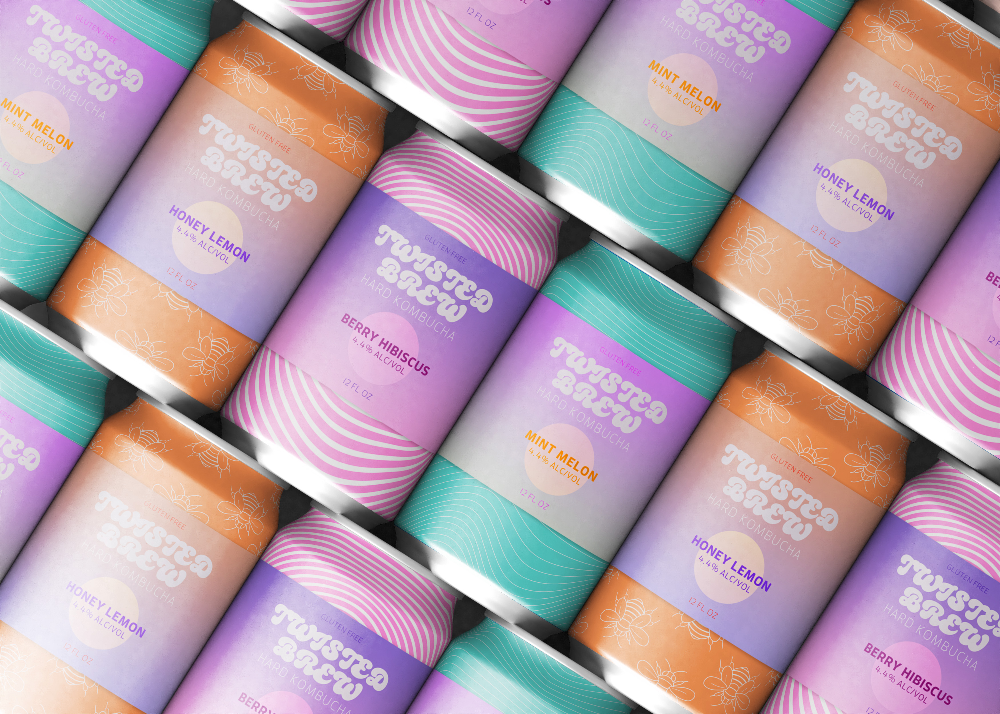
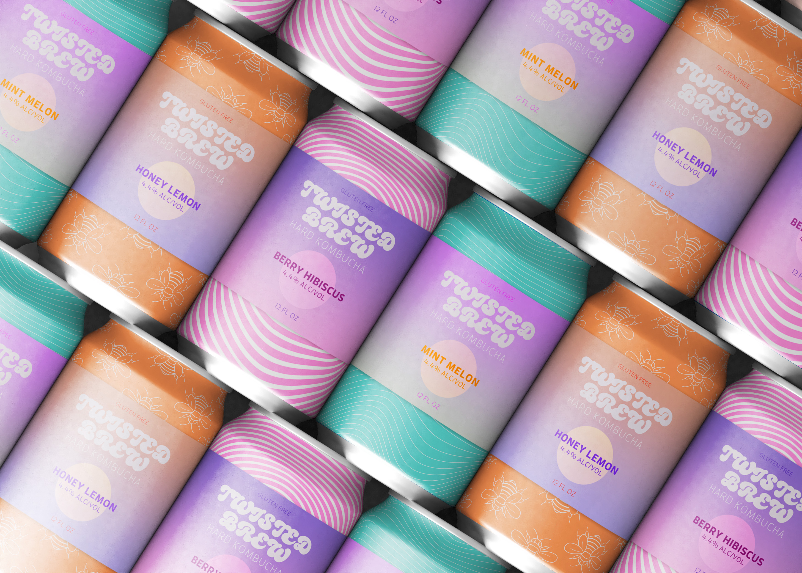

Twisted Brew
In the realm of my personal creative endeavor, I envisioned and brought to life Twisted Brew, a fictional brewery specializing in hard kombucha. Drawing inspiration from the fusion of vibrant colors and mind-altering patterns, I meticulously designed cans that serve as captivating visual portals to an extraordinary drinking experience. The kaleidoscopic aesthetics of the cans not only reflect the bold and adventurous nature of Twisted Brew's offerings but also invite consumers into a whimsical world of flavor and exploration.

 
